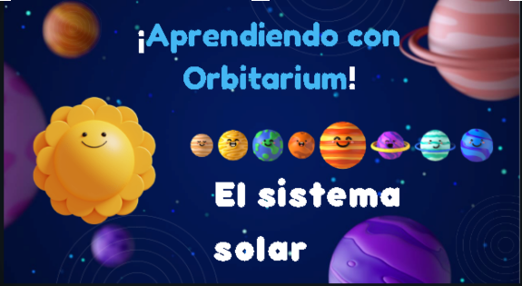
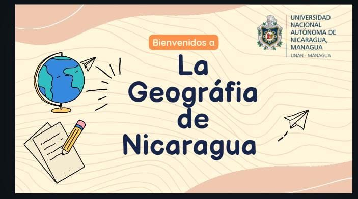
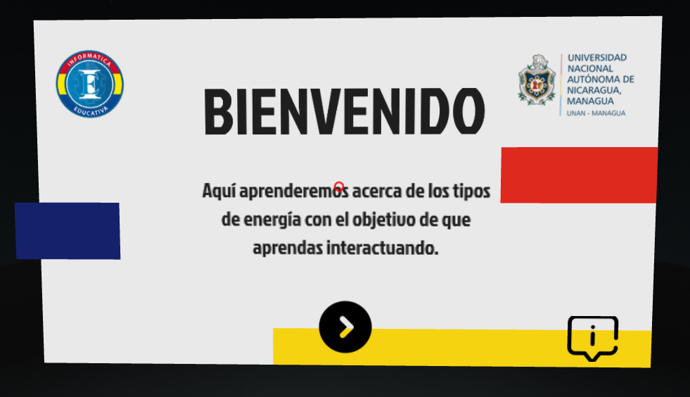
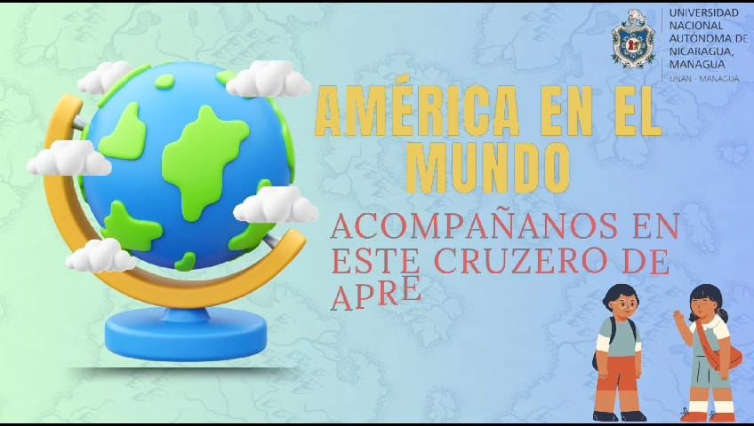

Repositorio de Objetos Educativos Digitales de los estudiantes de Informática Educativa Primer Año
UNAN-Managua
Acerca de Nosotros
Somos estudiantes de la carrera de Informática Educativa, apasionados por la tecnología y la enseñanza. Nos hemos dedicado a diseñar y desarrollar estos objetos didácticos digitales innovadores que facilitan el aprendizaje en diversos contextos educativos, integrando herramientas tecnológicas para potenciar la experiencia de enseñanza y aprendizaje.

Proyecto 1
We Don't Have System
Este objeto fue creado con el propósito de dar a conocer a los estudiantes de educación media de octavo grado,
las maravillas que ofrece la materia de Ciencias Naturales y abordamos específicamente el tema “El sistema
solar”

Proyecto 2
Unidos por el Objetivo
El objeto digital educativo fue creado para estudiantes de décimo grado en la asignatura Geografía de
Nicaragua, a través de el conocerás las coordenadas, los mapas y las representaciones ; ¡Aprende y divierte!
Proyecto 3
MRJ Power
Curabitur pretium tincidunt lacus. Nulla gravida orci a odio. Nullam varius, turpis et commodo pharetra, est
eros bibendum elit, nec luctus magna felis sollicitudin mauris. Integer in mauris eu nibh euismod gravida.
Duis ac tellus et risus vulputate vehicula. Donec lobortis risus a elit.
Proyecto 4
Techno Power
Este recurso didáctico fue creado con el objetivo de aportar información para el aprendizaje a los estudiantes
de 6to grado de la asignatura de estudios sociales.
Proyecto 5
Error 404
Descubre el sistema solar con este video diseñado para estudiantes de 8vo grado. Adaptado a diferentes estilos de aprendizaje, en donde aprenderás de manera dinámica y práctica sobre los planetas y su relación con el sol. ¡Explora y aprende mientras viajas por el espacio!

Proyecto 6
Equipo Beta
Objeto creado para apoyar a los estudiantes de 8.º grado de la asignatura de Ciencias Naturales, mostrando las
diversas formas en que se manifiesta la energía, utilizando Realidad Aumentada. Esta herramienta interactiva
permite a los estudiantes visualizar y experimentar de manera inmersiva conceptos clave como la energía
solar,eólica, eléctrica, hidráulica o hidroeléctrica.

Proyecto 7
Team Fire
El objeto digital educativo fue creado para estudiantes de décimo grado en la asignatura Geografía de
Nicaragua, a través de el conocerás las coordenadas, los mapas y las representaciones ; ¡Aprende y divierte
Proyecto 8
Visionarios Digitales
Curabitur pretium tincidunt lacus. Nulla gravida orci a odio. Nullam varius, turpis et commodo pharetra, est
eros bibendum elit, nec luctus magna felis sollicitudin mauris. Integer in mauris eu nibh euismod gravida.
Duis ac tellus et risus vulputate vehicula. Donec lobortis risus a elit.